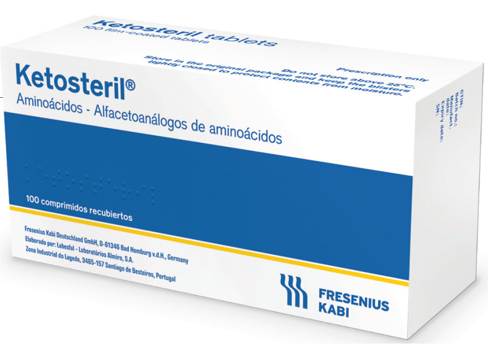

Retrasa la progresión
De la enfermedad renal crónica, retrasando el inicio de diálisis.
Programa de seguimiento nutricional
Atención nutricional especializada y sin costo para alcanzar adherencia y continuidad en el tratamiento con Ketosteril®.
Un flujo simple de cinco pasos desde la prescripción hasta el seguimiento continuo.
Del médico tratante
A Especialista / Contact Center
Por Nutricionista Renal
Primeros 3 meses
Según adherencia
Solicitud de contacto
Complete los datos del paciente. Nuestro Contact Center se comunicará directamente en las próximas 24–48 horas.
Programa
Por Nutricionista Renal
Ajustado a las necesidades y contexto del paciente
Resolución de dudas del paciente y su familia
Para apoyo en el tratamiento
Para mejorar la continuidad al tratamiento

Soporte continuo
Acompañamiento para una coordinación oportuna y cercana del paciente.
Coordinación directa con el paciente para fijar atenciones nutricionales.
Avisos automatizados para no perder controles del programa.
Verificación previa de cada atención agendada.
Cobertura

Evidencia clínica
Avalado por más de 250 estudios clínicos publicados en revistas de nefrología internacionales.
De la enfermedad renal crónica, retrasando el inicio de diálisis.
De complicaciones clínicas asociadas a la insuficiencia renal.
Y los resultados clínicos a través del seguimiento estructurado.
Al paciente y su familia durante el tratamiento.
Nuestro Contact Center contactará al paciente en las próximas 24–48 horas.